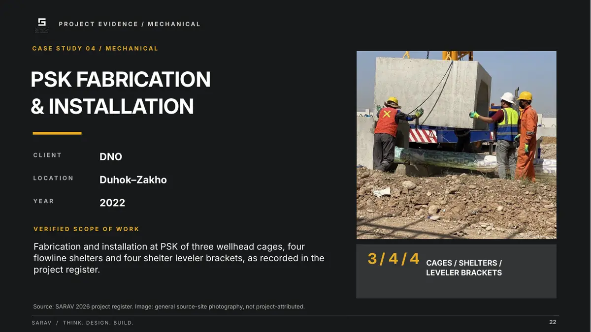

Company profile / presentation
SARAV: a company profile
in the colours of the site.
- Client
- SARAV — general contractor, Duhok
- Piece
- Company profile 2026, 26 slides, 16:9
- Language
- English
- My role
- Full redesign of the profile

01
Project Overview
SARAV is a contractor in Duhok, established in 2014, working in water infrastructure and civil, electrical and mechanical works.
02
Design Challenge
The profile is read by a client or a tender committee, and it has to convince them quickly that the company has the experience, equipment and delivered projects — without losing them in detail.
03
Design Approach
- Colours from the site itself: dark charcoal, sandy beige, and a machinery amber for lines, figures and accents.
- A light–dark rhythm: slides alternate between beige and charcoal, so each new section announces itself through the background.
- A three-word motto: THINK. DESIGN. BUILD. in huge type over three lines, on the cover and again on a slide of its own.
- Numbers first: an «at a glance» slide with big figures — founding year, years on record, operating areas and work streams — and the ISO certificates in a single band.
- Case studies on one template: client, location and year, then scope, then a photo and a standout figure. Readers can compare projects at a glance.
- Site photos at half a slide: excavation, pipelines and crews, large and next to the text.
- One typeface, several weights: Inter throughout, uppercase headings, with a small section label and fixed numbering on every slide.
04
Final Deliverables
- Company profile 202626 slides, 16:9, English — full redesign
05
Project Gallery



Does your company profile need a redesign?
Send your current profile or your information and photos, and the page count you need.